| Muestra | Nombre | Precio | Descripción |
|---|---|---|---|
| 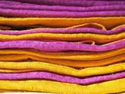 | Telas Origen Vegetales | $50.000 | Son aquellas cuyos hilos son de origen vegetal, estas telas son confeccionadas mediante hilos que son producto de fibras vegetales, como el lino, el algodón, el cáñamo y el yute entre otras, que son utilizadas para confeccionar ropa y otros enseres. Es el caso del yute que es común que se use en la confección de sacos, el algodón en pañuelos, camisas y pantalones, o el lino en camisas y blusas. |
| 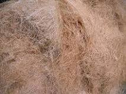 | Telas De Origen Animal | $40.000 | Son aquellas que son confeccionadas usando hilos que tienen un origen animal, es el caso de la lana (de borrego, alpaca o Yak), la seda (producida por las larvas del gusano de la morera), y varios pelajes que son entretejidos para formar telas, como el de cabras, camellos y otros animales. |
| 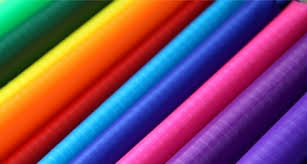 | Telas Artificiales | $40.000 | Son hechas a base de hilos de fibras sintéticas, tal es el caso del nylon, el poliéster, el Kevlar, el leacril, el rhovil, el saran, el merklon, y la licra, que son utilizadas tanto en la confección de vestimenta, como en la fabricación de otros enceres, cobijas, recubrimientos de autos, muebles, etc. En la actualidad, en la fabricación de prendas de vestir, así como de diversos enseres (alfombras, tapetes, recubrimientos de autos, telas para muebles, cortinas, toallas, etc.), se usan diversas telas que bien pueden ser de un sólo material o estar hechas con varios materiales combinados en proporciones diversas. |
| 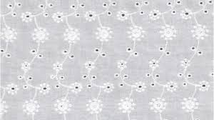 | Tela Batista | $23.000 | Es una tela muy fina de lino o de algodón, se usa para pañuelos de bolsillo, vestidos, camisas, blusas |
| 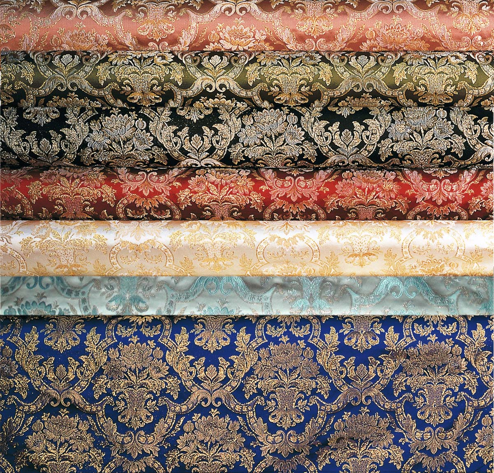 | Tela Brocado | $30.000 | Es un tejido de seda con bordados en relieve, realizados con hilos de metal o de seda más brillante, con los que se van formando dibujos, aunque originalmente es de ceda, también las hay con mesclas de rayón y algodón |
| 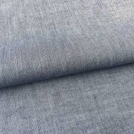 | Tela Chambray | $44.000 | Es de algodón blanqueado, de hilos muy finos, esta tela toma su nombre de la ciudad francesa de Chambray en donde empezó a fabricarse. Se destaca que es muy usada en prendas como camisas, blusas y lencería. |
| 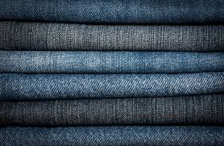 | Tela Mezclilla | $56.000 | Se conoce de su uso por lo menos desde el siglo XVII, aunque se cree que se remonta al menos a la edad media europea. Es una gama de tejidos de hilos de algodón muy resistente, usada para velas de barcos y otros usos en los que se necesitaba cierta resistencia y durabilidad. Aunque se ha usado por varios siglos para confeccionar vestimenta para “trabajo duro”, tomó mayor auge a partir de la confección de los “pantalones vaqueros”, que se comenzaron a fabricar por un emigrante Bávaro de origen judío, para los trabajadores de las minas, extendiéndose su uso. En la actualidad esta tela es usada para confeccionar ropa tanto de trabajo, como de moda, ya que posee muy buena resistencia y durabilidad. | 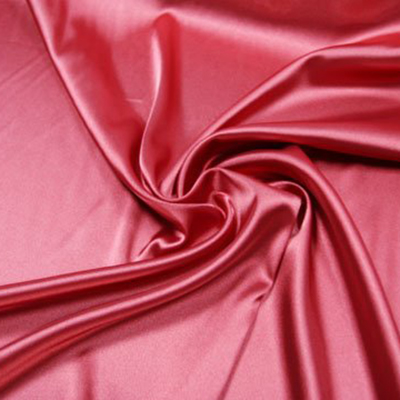 | Tela Acetato | $45.000 | Tela artificial brillante que imita la seda natural. Fabricada con hilos de fibra de acetato de celulosa, no encoge ni destiñe ni se arruga. Su apariencia es de lujo y se ha utilizado desde los años veinte en la confección de lencería, camisones, blusas y vestidos de fiesta, entre otras prendas. | 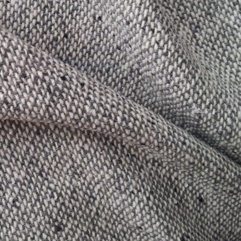 | Tela Acrílica | $34.000 | Tela artificial que tiene semejanza al tejido de lana natural y que, de hecho, la reemplaza en cualquier tipo de prenda. Colores nítidos. | 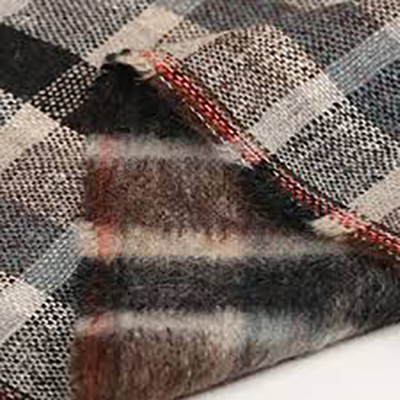 | Tela Alpaca | $22.000 | Tela fabricada con fibras de lana de alpaca -mamífero camélido, de la misma familia que la llama, propio de América del Sur y muy apreciado por su pelo-. Tejido fino, sedoso y liviano, con cuyo paño se confeccionan abrigos y jerséis. | 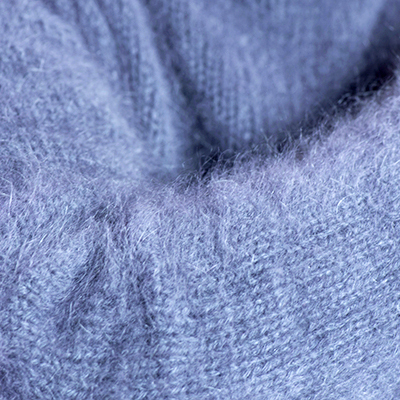 | Tela Angora | $34.000 | Obtenida a partir del conejo de angora, lanilla fina, ligera pero caliente, la lana de angora es usada principalmente en ropas tejidas en punto de malla, como suéteres, bufandas, calcetines, guantes y gorros, produciendo un moderado efecto de desprendimiento de mota. | 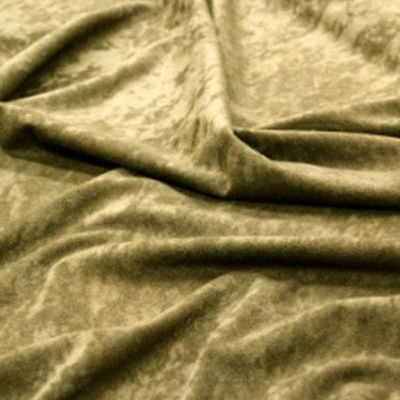 | Tela Antelina | $90.800 | Tela imitación del ante, un tejido tan sofisticado como caro para prendas de alta costura. Es muchísimo más barata y no deshilacha ni se arruga. Se usa para abrigos, chaquetas, faldas, pantalones, bolsos, cinturones, sombreros y zapatos. | 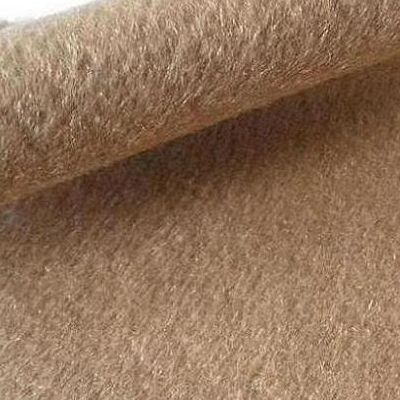 | Tela Cachemira | $34.000 | El genuino cachemir (o cashmere) es el que se obtiene de las cabras de las secas altiplanicies que rodean el desierto del Gobi, que se extiende desde el noreste de China hasta Mongolia. A la hora de valorar la calidad de este tejido los elementos esenciales son su finura, longitud y color, cuanto más blanco más apreciado. Suave, sedoso, muy liviano y resistente es ideal para la confección de suéteres y vestidos de mujer. | 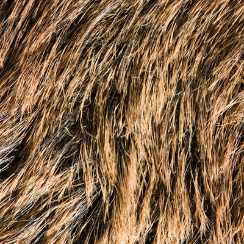 | Tela Castor | Depende del metro | Pelo del castor, un mamífero roedor de hasta 65 cm de largo, pelo castaño muy fino, que habita en Asia, América septentrional y norte de Europa. Suave con brillo sedoso se emplea en la confección de abrigos de piel. | 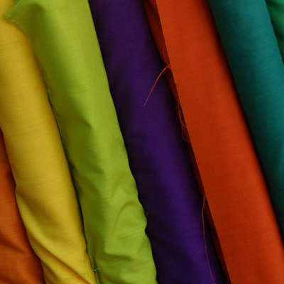 | Tela Chalis | Depende del metro | Tela ligera de lana, rayón o algodón. Suave, blanda y muy liviana, tiene una superficie ligeramente cepillada con un acabado sedoso. A menudo tiene un estampado y es cómoda de llevar por lo que se la utiliza con frecuencia para confeccionar blusas, kimonos, vestidos de mujer y ropa deportiva. | 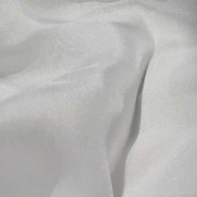 | Tela Chifón | $90.000 | O tul (velo o gasa de seda). Tela delgada y transparente de seda, algodón o hilo, que forma malla, generalmente en octógonos. Liviana y semi-transparente ideal para usar al atardecer en blusas de mujer y chalinas o chales estrechos. | 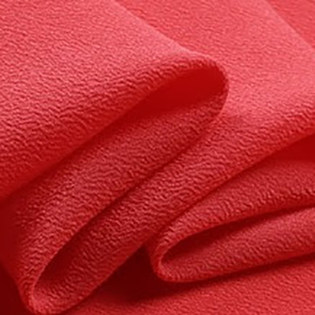 | Tela Crepé | $20.000 | Tela delgada y liviana de lana, seda o algodón. De apariencia áspera y rugosa, se utiliza en vestidos de mujer de todo tipo, dependiendo del espesor y, también, en la confección de trajes y abrigos. | 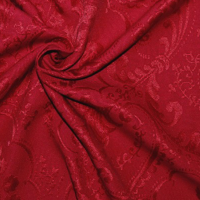 | Tela Damasco (Damask) | $10.000 | Tela fuerte, tradicionalmente de seda o lana, pero ahora se encuentra en algodón, lino, rayón, o en una combinación de fibras. Con dibujos formados por el tejido o jacquard, su nombre proviene de la ciudad de Damasco (Siria), donde se realizó la primera tela. Es elegante, formal y clásica. Reversible, aunque al revés no posee la belleza del derecho, y con patrones ondulados, se emplea en la confección de abrigos, chaquetas y vestidos o faldas de mujer, generalmente, de ceremonia. | Tela Dupioni | Depende del metro | Una de esas sedas difíciles de encontrar, proveniente de los gusanos de seda dobles que crean una tela poco común y de características atractivas. A menudo usada atuendos formales, es muy popular y una de las menos costosas. De superficie irregular, parte de su carácter y belleza son los restos de los capullos que se dejan en el hilo y el tejido, y aparecen como pequeñas motas y listas negras en la tela. | 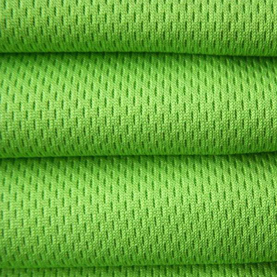 | Tela Dry-fit | Depende del metro | La tela deportiva más importante de todas y muy de moda los últimos años. Creada por la marca deportiva Nike, en su composición encontramos microfibra de poliéster que hace que la humedad se evapore fácilmente para evitar mantener el sudor en nuestro cuerpo. Se usa en camisetas de manga corta, blusas y pantalones. | 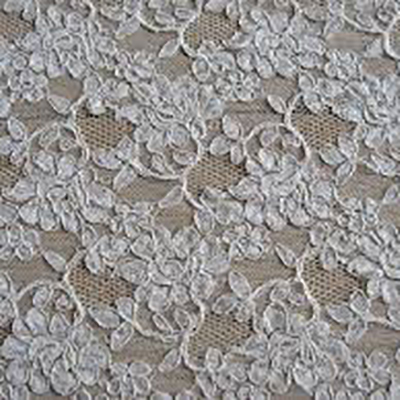 | Tela Encaje | Depende del metro | Tela ornamental y transparente que tradicionalmente está hecha a mano con hilos de seda y lino por su finura y resistencia, y sólo para puntillas más vulgares se hace uso del algodón o equivalente. También los podemos encontrar hecha a máquina. En muchas ocasiones se utiliza como adorno o aplicada sobre otras telas aportando belleza al modelo en velos, cubriendo vestidos completos o integrada en algunas de sus partes como en mangas o detalles decorativos. Es idónea para los conocidos escotes ‘ilusión’, que tapan el escote sin dejar de ser elegante y sofisticado. | 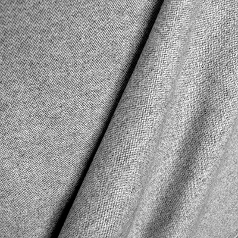 | Tela Franela (lanilla) | Depende del metro | Tela suave y fina de lana o algodón, ligeramente cardada por una de sus caras. Popular entre agricultores, leñadores y personas que trabajaban al aire libre durante los s. XIX y XX, y gracias a su capacidad aislante y su durabilidad, es utilizada para fabricar ropa de abrigo, chaquetas, trajes, vestidos y faldas. | 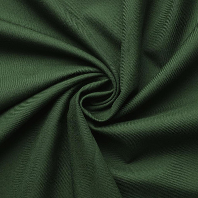 | Tela Gabardina | Depende del metro | Tela resistente y consistente de tejido diagonal muy tupido. De algodón, fibra y lana sintética, muy trabajada y tejida en forma apretada, posee una cara lisa y otra acanalada en diagonal. Difícil de plachar, brilla con el uso. Se usa en uniformes, trajes para mujeres y hombres, blusas y faldas, abrigos, guardapolvos e impermeables. | 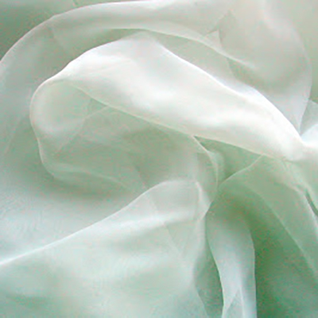 | Tela Gasa (cheesecloth) | Depende del metro | Elaborada con algodón 100% es semi-transparente y liviana, ideal para vestidos, blusas y fulares, así como para vestidos de hadas, duendes y bailarinas. | 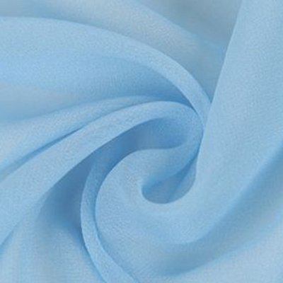 | Tela Georgette | Depende del metro | Tela de seda natural fabricada mediante tejido plano, utilizando hilos con alto grado de retorcimiento, lo que la proporciona una superficie de aspecto arrugado. Fina, ligera y fácil de llevar, elástica y algo traslúcida, aunque un poco más gruesa y opaca que el chifón. Se usa en blusas y vestidos. |  |
Tela Guipur | Depende del metro | Suele consistir en una tela como base en un tono neutro o flúor y encima, superpuesto, el encaje en un color más llamativo o en el mismo tono, dependiendo de la ocasión. Súper fresca y muy ponible en verano, y muy sofisticada. Se usa, sobre todo, en faldas y vestidos. | 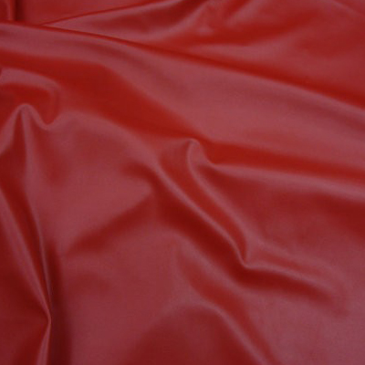 | Tela Ipora | Depende del metro | Similar al Gore-tex, combina una gran ligereza, una alta impermeabilidad, que protege de los efectos del agua, el viento y el frío, y una eficiente transpirabilidad que facilita la evacuación de la humedad corporal resultante del ejercicio físico. Se usa en casacas, parkas y ropa de alta montaña. | 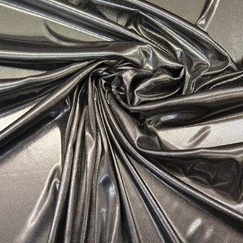 | Tela Lamé | Depende del metro | Tela híbrida hecha con tela metálica, o mejor, con fibras de metal cubiertas con plástico o hilo y con una tela de relleno como nailon o poliéster. Estas telas se tejen juntas para crear un género brillante y liviano. A pesar de su resistencia, se daña con facilidad por el el calor y la humedad. Se arruga fácilmente y es difícil de reparar. Aunque usualmente viene en tonos dorados y plateados, está disponible en diversos colores. Se usa para prendas de noche como faldas, tops y vestidos. |